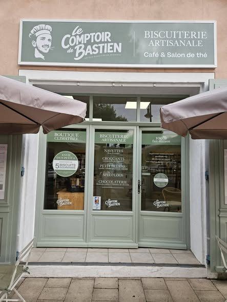

Notre histoire
La maison
Un artisan, un atelier en Provence, une boutique à Riez. Et beaucoup de fournées.
Bastien Burle
Faire de sa passion son métier
Je m'appelle Bastien Burle, biscuitier-chocolatier passionné depuis plus de dix ans. Formé en cuisine puis en pâtisserie, j'ai toujours su que je voulais faire de ma passion mon métier.
Au fil des années, j'ai eu la chance de travailler dans différentes entreprises et de vivre de nombreuses expériences professionnelles, qui m'ont permis de développer mon savoir-faire, ma créativité et mon exigence.
Depuis mon enfance, je nourris un rêve : créer ma propre boutique, un lieu qui me ressemble et où je pourrais partager ma passion à travers mes créations. Aujourd'hui, ce rêve est devenu réalité.
Je suis heureux de vous faire découvrir mon univers, mes biscuits et mes chocolats, imaginés et réalisés avec passion, savoir-faire et beaucoup de cœur. À très vite !


L'atelier
Fabriqué à Saint-Martin-de-Brômes
Nos biscuits et nos chocolats ne viennent pas de loin : ils sont élaborés dans notre laboratoire de Saint-Martin-de-Brômes, à quelques minutes de la boutique.
La pâte est pétrie, découpée, rangée sur plaque et cuite en petites fournées. C'est plus long qu'une chaîne de production, et c'est exactement le but : chaque biscuit passe entre nos mains.
De là, tout part directement en vitrine, place Maxime Javelly.
La boutique

Au cœur de Riez
Une biscuiterie, une chocolaterie et un salon de thé réunis dans un même lieu, à l'ombre des platanes de la place.
Emballages soignés
Sachets noués, boîtes métal illustrées : de quoi transformer une gourmandise en cadeau.
Depuis notre atelier provençal, nous élaborons des biscuits artisanaux avec exigence, passion et authenticité.